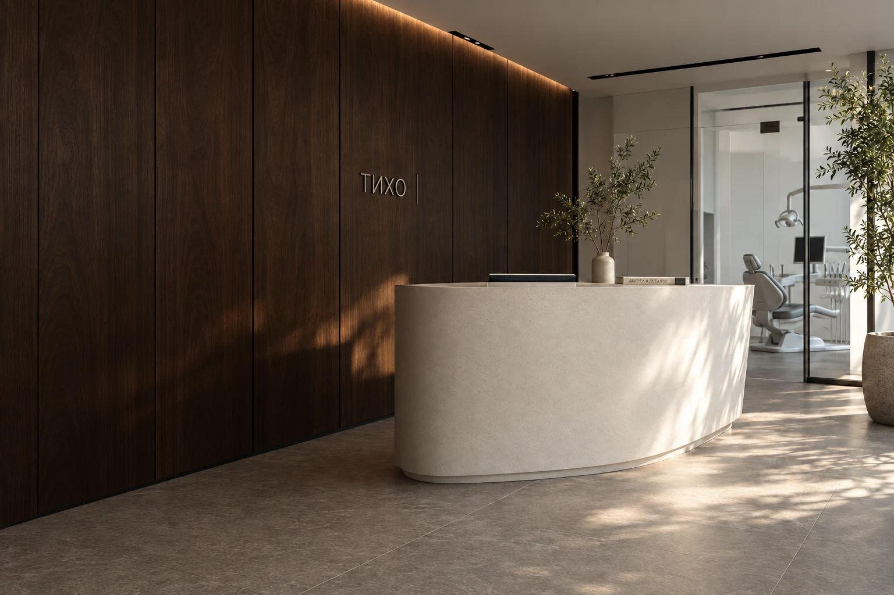
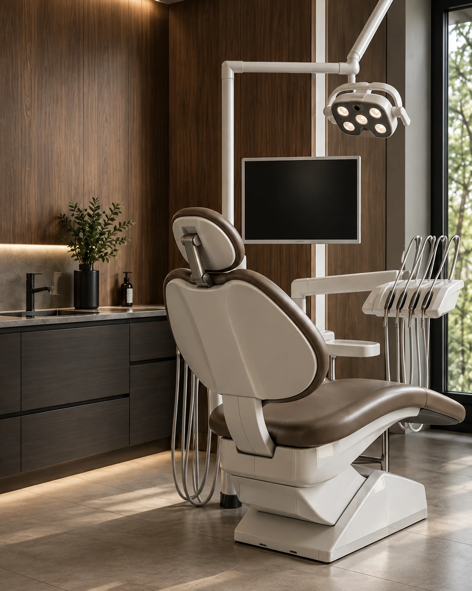

Объясняем по шагам
Простым языком рассказываем, что происходит, и отвечаем на вопросы. Чтобы решения были осознанными.

Стоматология в Москве, где есть время
выслушать, объяснить и позаботиться.
Хорошая стоматология начинается с разговора. Мы за понятный план, внимание к деталям и ваше право не спешить.
Простым языком рассказываем, что происходит, и отвечаем на вопросы. Чтобы решения были осознанными.
Обсуждаем план, этапы и стоимость до начала лечения. Оставляем время всё обдумать.
Учитываем ваши пожелания и самочувствие. Можно задать вопрос, попросить паузу или отложить решение.
От профилактики до восстановления улыбки. Начнём с того, что важно вам.
Профессиональная гигиена и обсуждение домашнего ухода. На консультации можно разобраться с выбором щётки и привычками, которые подходят именно вам.
Обсуждение состояния зубов, необходимой диагностики и вариантов лечения. Врач объясняет, какие этапы нужны и зачем, прежде чем приступить к работе.
Консультация по реставрациям, коронкам и восстановлению отсутствующих зубов. Выбор подхода зависит от осмотра, диагностики и ваших пожеланий.
Обсуждение прикуса и положения зубов, брекетов и элайнеров. На первом визите разбирают возможные варианты, ограничения и порядок дальнейшей диагностики.
Разговор о цвете, форме и пропорциях зубов. До выбора процедуры важно обсудить ожидания и понять, какие решения возможны в конкретной ситуации.
Направления показаны для демонстрации. План и стоимость определяются после консультации.
Один зуб — несколько слоёв.
Посмотрите, как он устроен.
Эмаль покрывает коронку и защищает расположенный под ней дентин. В ней нет живых клеток, поэтому повреждённая эмаль не восстанавливается сама.
Упрощённая иллюстрация строения зуба.
Не используется для диагностики.

Вы рассказываете, что вас беспокоит и что хотелось бы изменить. Мы уточняем детали и ожидания.
Обсуждаем осмотр и необходимую диагностику. Показываем и объясняем простыми словами.
Рассматриваем варианты, этапы и стоимость. Вы принимаете решение без спешки и давления.
Несколько ответов, чтобы первый шаг
был немного спокойнее.
В концепции «Тихо» можно заранее рассказать о своих переживаниях, обсудить ход визита и договориться о паузах. Первый разговор ни к чему не обязывает.
Да, первый визит задуман как знакомство: вопросы, обсуждение ситуации и возможных шагов. Решение о лечении принимается отдельно.
Нет. «Тихо» — вымышленная клиника и демонстрационный проект для портфолио. Изображения сгенерированы. Сайт не оказывает медицинские услуги и не принимает реальные заявки.
Выберите направление — покажем,
как работает заявка.
Демонстрационная форма. Используйте только вымышленные данные. Ничего не отправляется и не сохраняется.
В настоящем сервисе здесь появилось бы подтверждение заявки. В этой демонстрации ничего не отправлено, а поля уже очищены.